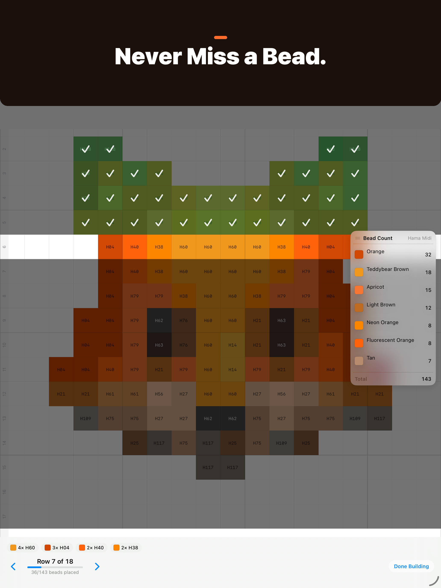
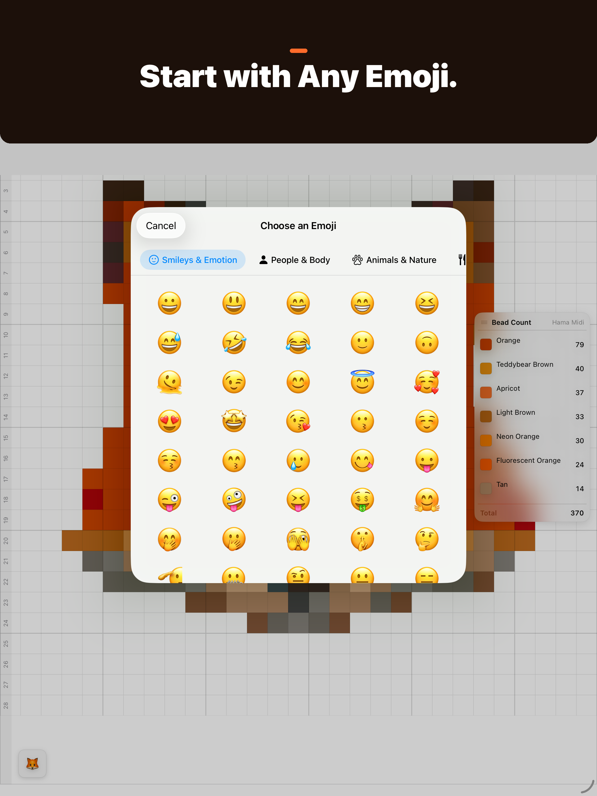
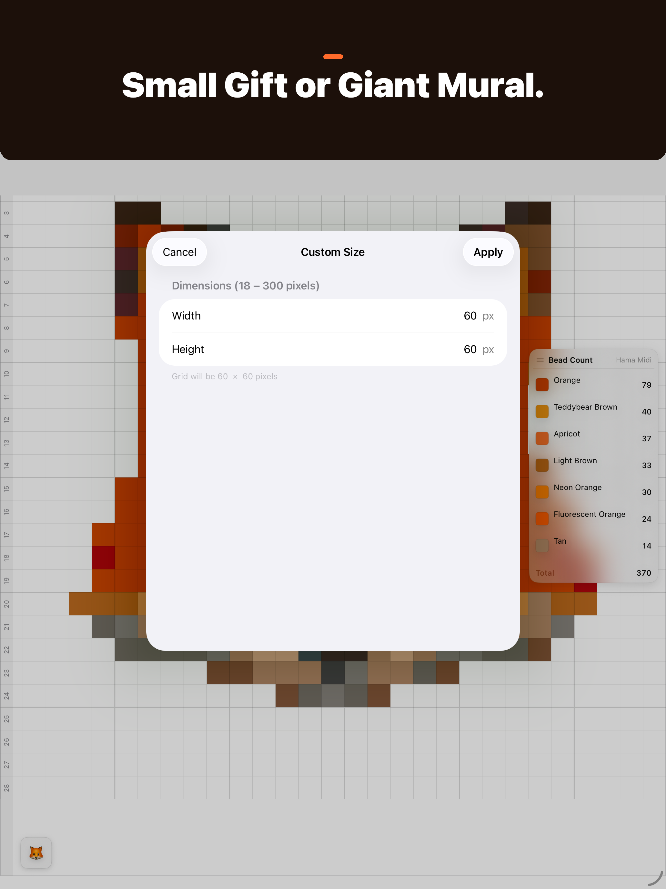

Turn photos into bead art.
Beadify converts any photo or emoji into a pixel bead pattern you can physically build — with exact bead counts and color codes.
No account required · Photos stay on your device
Beadify converts any photo or emoji into a pixel bead pattern you can physically build — with exact bead counts and color codes.



Import from your photo library, take a photo with your camera, or pick from 1,900+ emoji across 8 categories.
Every pixel snaps to the nearest real bead color using Oklab — a perceptually uniform color space designed for exactly this.
Build board by board and row by row, with tap-to-check-off progress, so you never lose your place mid-pattern.
Paint, fill, replace colors or erase individual beads after conversion, with full undo and redo.
Get exact buy quantities per color, with spares built in, exportable as a CSV you can take to checkout.
Switch brands and see the nearest-match substitution for every bead — useful when your local shop only carries one line.
Save, rename, and revisit multiple patterns. Everything syncs automatically via iCloud — no account, no server.
Giant patterns split across pegboards with seam guides, so oversized builds stay easy to assemble.
Match to real beads from the brands you already use — or build a custom palette from the colors you own.
Everything above is free. Beadify Pro is an optional one-time purchase with extra tools for bigger projects.
No subscription. Bought Remove Ads or Beadify 1.7? You already have Pro.
Free on the App Store for iPhone, iPad, and Mac.